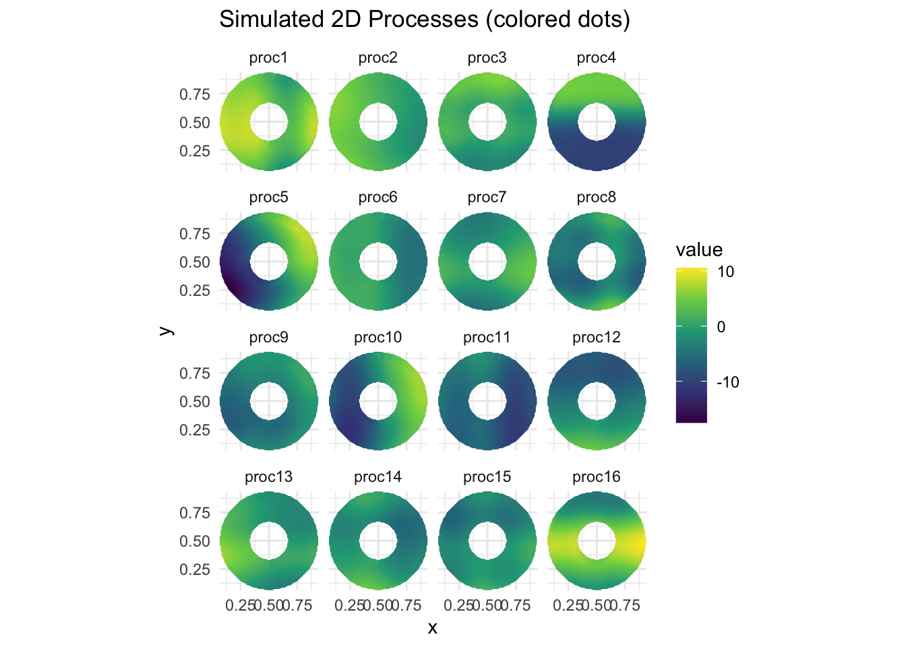
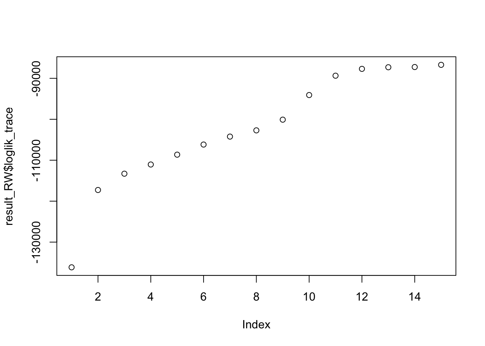
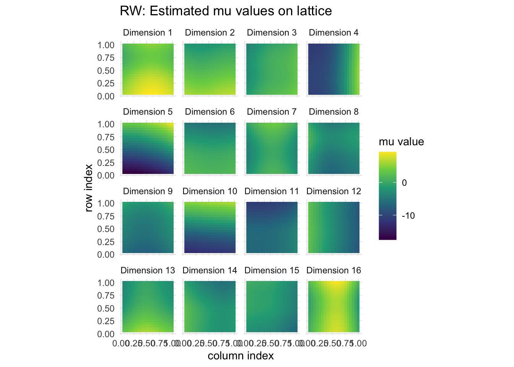
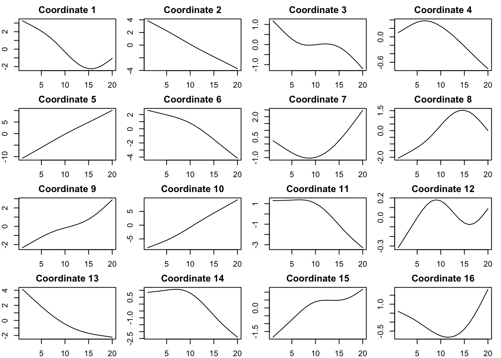
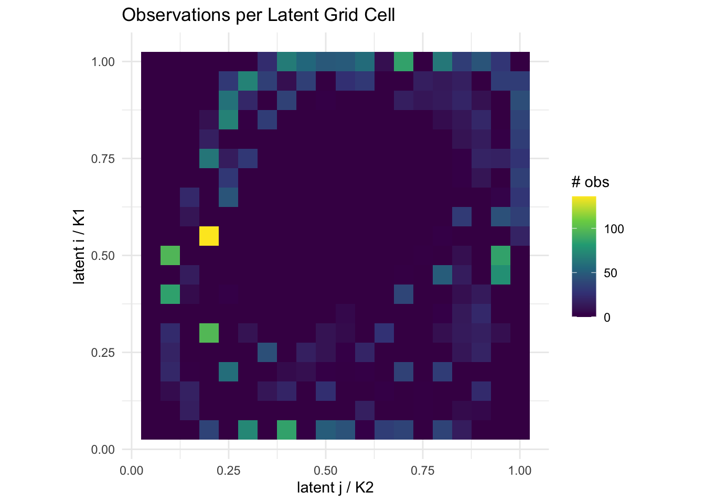

Smooth EM in 2D (Additive)
Ziang Zhang
2025-07-28
Last updated: 2025-07-28
Checks: 7 0
Knit directory: InferOrder/
This reproducible R Markdown analysis was created with workflowr (version 1.7.1). The Checks tab describes the reproducibility checks that were applied when the results were created. The Past versions tab lists the development history.
Great! Since the R Markdown file has been committed to the Git repository, you know the exact version of the code that produced these results.
Great job! The global environment was empty. Objects defined in the global environment can affect the analysis in your R Markdown file in unknown ways. For reproduciblity it’s best to always run the code in an empty environment.
The command set.seed(20250707) was run prior to running
the code in the R Markdown file. Setting a seed ensures that any results
that rely on randomness, e.g. subsampling or permutations, are
reproducible.
Great job! Recording the operating system, R version, and package versions is critical for reproducibility.
Nice! There were no cached chunks for this analysis, so you can be confident that you successfully produced the results during this run.
Great job! Using relative paths to the files within your workflowr project makes it easier to run your code on other machines.
Great! You are using Git for version control. Tracking code development and connecting the code version to the results is critical for reproducibility.
The results in this page were generated with repository version 8d8778f. See the Past versions tab to see a history of the changes made to the R Markdown and HTML files.
Note that you need to be careful to ensure that all relevant files for
the analysis have been committed to Git prior to generating the results
(you can use wflow_publish or
wflow_git_commit). workflowr only checks the R Markdown
file, but you know if there are other scripts or data files that it
depends on. Below is the status of the Git repository when the results
were generated:
Ignored files:
Ignored: .DS_Store
Ignored: .Rhistory
Ignored: .Rproj.user/
Ignored: analysis/.DS_Store
Ignored: analysis/figure/
Ignored: analysis/site_libs/
Ignored: code/.Rhistory
Untracked files:
Untracked: code/additive_EM.R
Untracked: various figures/
Unstaged changes:
Modified: analysis/explore_2DSmoothEM.rmd
Modified: code/general_EM.R
Modified: code/simulate2D_fields.R
Note that any generated files, e.g. HTML, png, CSS, etc., are not included in this status report because it is ok for generated content to have uncommitted changes.
These are the previous versions of the repository in which changes were
made to the R Markdown
(analysis/explore_2DSmoothEM_additive.rmd) and HTML
(docs/explore_2DSmoothEM_additive.html) files. If you’ve
configured a remote Git repository (see ?wflow_git_remote),
click on the hyperlinks in the table below to view the files as they
were in that past version.
| File | Version | Author | Date | Message |
|---|---|---|---|---|
| Rmd | 8d8778f | Ziang Zhang | 2025-07-28 | workflowr::wflow_publish("analysis/explore_2DSmoothEM_additive.rmd") |
source("./code/prior_precision.R")
source("./code/additive_EM.R")Warning: package 'matrixStats' was built under R version 4.3.3Warning: package 'mvtnorm' was built under R version 4.3.3source("./code/simulate2D_fields.R")
library(tidyverse)Warning: package 'ggplot2' was built under R version 4.3.3Warning: package 'purrr' was built under R version 4.3.3── Attaching core tidyverse packages ──────────────────────── tidyverse 2.0.0 ──
✔ dplyr 1.1.4 ✔ readr 2.1.5
✔ forcats 1.0.0 ✔ stringr 1.5.1
✔ ggplot2 3.5.2 ✔ tibble 3.2.1
✔ lubridate 1.9.3 ✔ tidyr 1.3.1
✔ purrr 1.0.4
── Conflicts ────────────────────────────────────────── tidyverse_conflicts() ──
✖ dplyr::count() masks matrixStats::count()
✖ tidyr::expand() masks Matrix::expand()
✖ dplyr::filter() masks stats::filter()
✖ dplyr::lag() masks stats::lag()
✖ tidyr::pack() masks Matrix::pack()
✖ tidyr::unpack() masks Matrix::unpack()
ℹ Use the conflicted package (<http://conflicted.r-lib.org/>) to force all conflicts to become errorslibrary(ggplot2)
library(reshape2)
Attaching package: 'reshape2'
The following object is masked from 'package:tidyr':
smithslibrary(tidyr)
library(dplyr)Introduction
We consider a smooth EM algorithm where the component means \(\mu(t_1,t_2)\) has an additive form as \(\mu(t_1, t_2) = f(t_1) + g(t_2)\), where \(f\) and \(g\) are smooth functions of the 1D coordinates \(t_1\) and \(t_2\), respectively.
For simplicity, we assume \(f\) and \(g\) follow independent random walk priors, and are both defined on a equally spaced grid of \(K\) points.
Simulate Data
First, let’s simulate some \(d=16\)-dimensional data from a \(20 \times 20\) grid defined on the unit square \([0,1] \times [0,1]\).
The observation noise is assumed to be Gaussian with standard deviation 0.1 in each dimension.
To make this problem more interesting, let’s consider the sampling region follows roughly a donut shape.
funcs <- make_diverse_additive_functions(n_surfaces = 16,
freq_pool = c(0.5, 1, 2),
seed = 123)
n <- 100 # grid resolution
inner_rad <- 0.2 # inner hole radius
outer_rad <- 0.4 # outer radius of donut
center <- c(0.5, 0.5)
xs <- seq(0, 1, length.out = n)
ys <- seq(0, 1, length.out = n)
grid <- expand.grid(x = xs, y = ys)
r <- sqrt((grid$x - center[1])^2 + (grid$y - center[2])^2)
grid_choice <- subset(grid, r > inner_rad & r < outer_rad)
# Quick plot to check
plot(grid, pch = 16, cex = 0.3, col = "lightgrey",
main = "Donut‐shaped Grid")
points(grid_choice, pch = 16, cex = 0.5, col = "steelblue")
sim <- simulate_2d_processes(
f = funcs,
nrow = 50,
ncol = 50,
d = 16,
epsilon_sd = 0.1,
grid = grid_choice,
seed = 123
)Let’s visualize the simulated processes.
df_plot <- cbind(sim$grid, sim$Y)
df_long <- melt(df_plot, id.vars = c("x", "y"),
variable.name = "process",
value.name = "value")
ggplot(df_long, aes(x = x, y = y, color = value)) +
geom_point() +
scale_color_viridis_c(name = "value") +
coord_equal() +
facet_wrap(~ process, nrow = 4) +
labs(
title = "Simulated 2D Processes (colored dots)",
x = "x",
y = "y"
) +
theme_minimal()
Now, let’s permute the rows of sim$Y to avoid any
spatial structure in the ordering of the data points.
sim$Y <- sim$Y[sample(nrow(sim$Y)), ]Fitting RW-2
We will fit the additive smooth EM algorithm using RW2 priors for both \(f\) and \(g\).
K <- 20
Q1 <- make_random_walk_precision(K = K, d = ncol(sim$Y), q = 2, lambda = 1e4, ridge = 0)
Q2 <- make_random_walk_precision(K = K, d = ncol(sim$Y), q = 2, lambda = 1e4, ridge = 1e-10)
Q_list <- list(Q1, Q2)
set.seed(123)
init_params <- make_default_init_add(X = sim$Y, Q_list = Q_list)
result_RW <- additive_smoothEM(
data = sim$Y,
Q_list = Q_list,
init_params = init_params,
max_iter = 100,
tol = 1e-4,
relative_lambda = TRUE,
verbose = TRUE
)Iter 1: data_ll = -125973.9102, penalty = -10182.3753, total = -136156.2854
Iter 2: data_ll = -117327.5569, penalty = 57.7038, total = -117269.8531
Iter 3: data_ll = -111942.0103, penalty = -1345.2669, total = -113287.2772
Iter 4: data_ll = -108291.9402, penalty = -2753.8286, total = -111045.7688
Iter 5: data_ll = -104525.3311, penalty = -4114.0556, total = -108639.3867
Iter 6: data_ll = -101672.2399, penalty = -4499.4227, total = -106171.6626
Iter 7: data_ll = -99691.3476, penalty = -4535.9754, total = -104227.3230
Iter 8: data_ll = -98241.5204, penalty = -4464.7476, total = -102706.2681
Iter 9: data_ll = -96075.0280, penalty = -4016.2441, total = -100091.2720
Iter 10: data_ll = -90992.6785, penalty = -3088.0345, total = -94080.7130
Iter 11: data_ll = -85656.1621, penalty = -3696.9712, total = -89353.1334
Iter 12: data_ll = -82056.8777, penalty = -5628.7556, total = -87685.6333
Iter 13: data_ll = -79660.3008, penalty = -7630.3830, total = -87290.6837
Iter 14: data_ll = -77910.6565, penalty = -9327.6224, total = -87238.2788
Iter 15: data_ll = -76075.0256, penalty = -10628.6417, total = -86703.6674
Iter 16: data_ll = -74831.7786, penalty = -12165.0107, total = -86996.7893
Objective decreased at iter 15 (-86703.6674 → -86996.7893), rolling back and stopping.plot(result_RW$loglik_trace)
mu_list <- result_RW$params$mu
n_cells <- length(mu_list)
K <- sqrt(n_cells)
df <- do.call(rbind, lapply(seq_along(mu_list), function(i) {
row <- ((i - 1) %/% K) + 1
col <- ((i - 1) %% K) + 1
vals <- mu_list[[i]]
data.frame(
row = row,
col = col,
dim = factor(1:length(vals)),
value = vals
)
}))
df$col <- df$col/K
df$row <- df$row/K
ggplot(df, aes(x = col, y = row, fill = value)) +
geom_tile() +
scale_fill_viridis_c(option = "D") +
facet_wrap(~ dim, nrow = 4,
labeller = labeller(dim = function(x) paste("Dimension", x))) +
coord_equal() +
labs(
x = "column index",
y = "row index",
fill = "mu value",
title = "RW: Estimated mu values on lattice"
) +
theme_minimal()
Plot each function:
par(mfrow = c(4, 4), mar = c(2, 2, 2, 1))
for (i in 1:ncol(result_RW$theta[[1]])) {
plot(result_RW$theta[[1]][,i], type = 'l', main = paste("Coordinate", i))
}
par(mfrow = c(1, 1))
par(mfrow = c(4, 4), mar = c(2, 2, 2, 1))
for (i in 1:ncol(result_RW$theta[[2]])) {
plot(result_RW$theta[[2]][,i], type = 'l', main = paste("Coordinate", i))
}
par(mfrow = c(1, 1))Let’s take a look at the inferred locations:
K1 <- K; K2 <- K
# 1) Hard‐assign each observation to a latent grid index (1 … K1*K2)
cluster_assign <- max.col(result_RW$gamma)
# 2) Build a data.frame of the full latent grid with its (i,j) coordinates
latent_grid <- expand.grid(i = seq_len(K1), j = seq_len(K2))
latent_grid$cluster <- seq_len(nrow(latent_grid)) # 1:(K1*K2)
# 3) Map each observation to its latent grid (i,j)
obs_map <- data.frame(
obs = seq_len(nrow(sim$Y)),
cluster = cluster_assign
)
assign_df <- merge(obs_map, latent_grid, by = "cluster")
# 4) Compute raw counts per (i,j)
raw_cnt <- assign_df %>%
count(i, j, name = "n_obs")
# 5) Build the complete grid of (i,j)
full_grid <- expand.grid(i = seq_len(K1), j = seq_len(K2))
# 6) Left‐join counts and fill missing with zero
cnt_full <- full_grid %>%
left_join(raw_cnt, by = c("i", "j")) %>%
replace_na(list(n_obs = 0))
# 7) Plot the number of observations per latent grid cell,
# normalized to [0,1] for both axes
ggplot(cnt_full, aes(x = j / K2, y = i / K1, fill = n_obs)) +
geom_tile() +
scale_fill_viridis_c(option = "D", name = "# obs") +
labs(
x = "latent j / K2",
y = "latent i / K1",
title = "Observations per Latent Grid Cell"
) +
coord_equal() +
theme_minimal()
Thought the inferred locations are not perfectly matching the donut shape, they still show some “donut-like” structure.
sessionInfo()R version 4.3.1 (2023-06-16)
Platform: aarch64-apple-darwin20 (64-bit)
Running under: macOS 15.5
Matrix products: default
BLAS: /Library/Frameworks/R.framework/Versions/4.3-arm64/Resources/lib/libRblas.0.dylib
LAPACK: /Library/Frameworks/R.framework/Versions/4.3-arm64/Resources/lib/libRlapack.dylib; LAPACK version 3.11.0
locale:
[1] en_US.UTF-8/en_US.UTF-8/en_US.UTF-8/C/en_US.UTF-8/en_US.UTF-8
time zone: America/Chicago
tzcode source: internal
attached base packages:
[1] stats graphics grDevices utils datasets methods base
other attached packages:
[1] reshape2_1.4.4 lubridate_1.9.3 forcats_1.0.0 stringr_1.5.1
[5] dplyr_1.1.4 purrr_1.0.4 readr_2.1.5 tidyr_1.3.1
[9] tibble_3.2.1 ggplot2_3.5.2 tidyverse_2.0.0 Matrix_1.6-4
[13] mvtnorm_1.3-1 matrixStats_1.4.1 workflowr_1.7.1
loaded via a namespace (and not attached):
[1] sass_0.4.10 generics_0.1.4 stringi_1.8.7 lattice_0.22-6
[5] hms_1.1.3 digest_0.6.37 magrittr_2.0.3 timechange_0.3.0
[9] evaluate_1.0.3 grid_4.3.1 RColorBrewer_1.1-3 fastmap_1.2.0
[13] plyr_1.8.9 rprojroot_2.0.4 jsonlite_2.0.0 processx_3.8.6
[17] whisker_0.4.1 ps_1.9.1 promises_1.3.3 httr_1.4.7
[21] viridisLite_0.4.2 scales_1.4.0 jquerylib_0.1.4 cli_3.6.5
[25] rlang_1.1.6 withr_3.0.2 cachem_1.1.0 yaml_2.3.10
[29] tools_4.3.1 tzdb_0.5.0 httpuv_1.6.16 vctrs_0.6.5
[33] R6_2.6.1 lifecycle_1.0.4 git2r_0.33.0 fs_1.6.6
[37] pkgconfig_2.0.3 callr_3.7.6 pillar_1.10.2 bslib_0.9.0
[41] later_1.4.2 gtable_0.3.6 glue_1.8.0 Rcpp_1.0.14
[45] xfun_0.52 tidyselect_1.2.1 rstudioapi_0.16.0 knitr_1.50
[49] farver_2.1.2 htmltools_0.5.8.1 labeling_0.4.3 rmarkdown_2.28
[53] compiler_4.3.1 getPass_0.2-4